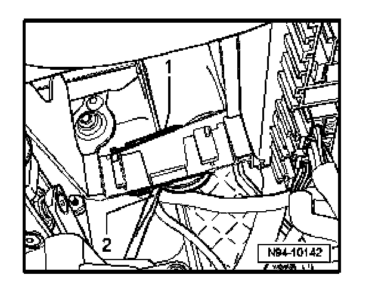
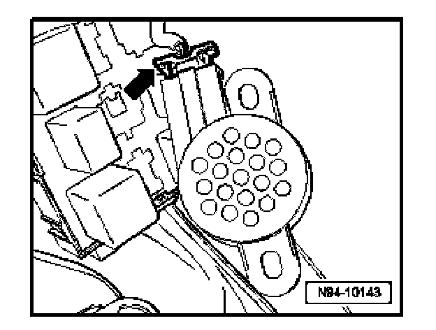

Parking Aid Loudspeaker -R169-, Removing and Installing
Parking Aid Loudspeaker -R169-, Removing And Installing
The parking aid loudspeaker is located in the left front footwell on relay carrier.
- Remove driver's lower instrument panel trim
- Partially remove relay carrier.

- Using a screwdriver -2-, carefully pry loudspeaker off from relay carrier -1-.

- Disconnect electrical connection -arrow-.
Installing
Install in reverse order of removal.